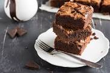

Ingredients
- 1 cup unsalted butter
- 2 cups granulated sugar
- 4 large eggs
- 1 teaspoon vanilla extract
- 2/3 cup cocoa powder
- 1 cup all-purpose flour
- 1/2 teaspoon salt
- 1/2 teaspoon baking powder
Instructions
- Preheat your oven to 350°F (175°C) and grease a 9x9-inch baking pan.
- Melt the butter in a microwave or on the stove, then stir in the sugar and vanilla extract.
- Beat in the eggs one at a time, mixing well after each.
- Sift in the cocoa powder, flour, salt, and baking powder. Mix until the batter is smooth.
- Pour the batter into the prepared baking pan and spread it evenly.
- Bake for 25-30 minutes or until a toothpick comes out with a few moist crumbs.
- Let the brownies cool before cutting them into squares.
Enjoy your delicious homemade brownies!
